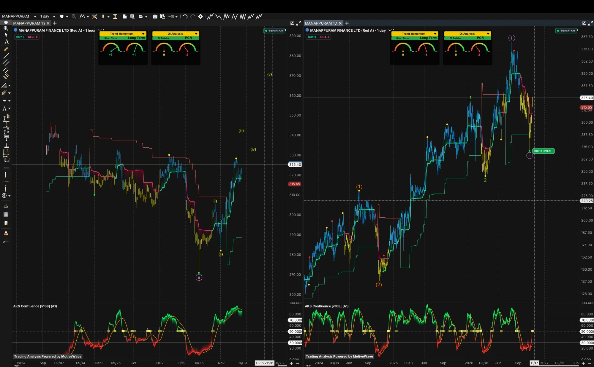

Gold-loan NBFC with Bain Capital as joint-control investor · Q1 FY27 PAT ₹585 Cr vs ₹132 Cr (base effect) · Q2 FY27 results due 12 Nov · Price ₹325.40: header shows +12.6%, the Related table and Screener show about 0.18%
₹325.40 ⚠ +₹36.40 (+12.6%)? conflict
Report date: 7 Nov 2026 (prices of 6 Nov close) | Mkt Cap: ₹27,543 Cr (MarketSmith) / ₹30,566 Cr (Screener) | Book Value: ₹171/sh (Screener) | MarketSmith Master Score: B (67)
● Asset quality: Stage 3 1.60% vs 3.00%, LTV up to 65.6%
● Valuation: P/E ~20x on depressed ROE 6–7%
● RS 67 · EPS Rating 73 · Master B
● Q2 FY27 not yet reported (12 Nov)
01
Company Overview
What They Do
Manappuram Finance is a Kerala-based non-banking finance company that lends against gold jewellery. In plain English: a customer pledges gold ornaments, the company lends a fraction of their value (the loan-to-value, LTV) and earns interest; if the loan is not repaid the gold can be auctioned. Gold price is therefore the key external variable. The group also owns Asirvad Microfinance (unsecured group loans, which went through a stress year in FY25–FY26) and a housing-finance arm, and has historically run vehicle and other loans. Since March 2026 Bain Capital is a joint-control investor (section 07).
FY26 consolidated revenue was ₹9,509 Cr (−5%) and EPS ₹11.72 (₹14.22 in FY25, ₹25.96 in FY24, MarketSmith). The latest reported quarter is Q1 FY27 (Jun-26): revenue ₹3,034 Cr (+34%), PAT ₹585 Cr against ₹132 Cr a year earlier. That jump is largely a base effect from a very weak Q1 FY26. Trailing-twelve-month revenue is ₹10,285 Cr (MarketSmith) and TTM EPS ₹16.39 (my arithmetic from MarketSmith quarters; ~₹15.97 on Screener's quarters). Consolidated AUM was ₹69,635 Cr (+57% YoY), of which gold ₹57,006 Cr (+98%).
Key Competitive Advantage: a long-established gold-loan franchise (5,328 branches at Jun-26), AA funding access (CRISIL) and a record of collateral recovery, now with a global private-equity partner. The flip side: gold is a volatile commodity, banks and Muthoot compete hard, the RBI's 1 Apr 2026 framework removes discretion on LTV and auctions, and AUM growth of +98% in gold is partly price-driven (section 04).
AUM Mix (30 Jun 2026)
Revenue-Mix Diversification
Rated 2 / 5
■■■■■
My rating, not a sourced one. Gold is ~82% of AUM (CRISIL: ~80%, versus 47% non-gold in Mar-24, so the book has become more concentrated, not less). Non-gold (~18%) is mostly Asirvad, where core microfinance AUM fell 12.9% YoY and the unit is moving into gold (₹2,344 Cr of its ₹7,188 Cr book).
What would lift it: stable asset quality in non-gold and a sustained non-gold share above ~25% (CRISIL's upgrade trigger centres on returns: ROMA above 4%). South India holds ~63% of branches (CRISIL).
02
Competitive Advantage (Moat) Analysis
Dimension
Rating
Commentary
Brand / Trust
Strong
A long-running gold-loan brand in a trust-sensitive product. Customer count was not found. Muthoot is the larger brand; Manappuram is the clear number two among NBFCs (Rajya Sabha reply, Mar-25: gold NPAs ₹436 Cr vs Muthoot ₹3,369 Cr, an absolute figure that mostly reflects book size and is not current).
Network Effects
Weak / Branch-density
No platform dynamics; the equivalent is branch density. 5,328 branches at Jun-26 with ~500 new gold branches planned in FY27 (an older Motilal note says 500–550). Tonnage ~67 t (single source, unverified).
Switching Costs
Low
A short collateralised loan is easy to take elsewhere; speed, proximity and trust hold customers. Banks offer lower rates to those who can wait.
Cost / Scale Advantage
Moderate
CRISIL AA/Stable (a notch below Muthoot's AA+ in my earlier Muthoot work, so funding costs are structurally higher). Q1 FY27 finance cost rose 48.95% against revenue +34%. Cost-to-income improved 920 bps YoY to 42.97% (cofacto.ai). NIM, yield, CRAR and credit cost for Q1 FY27 were not found (the NSE press release timed out).
Regulation as a Barrier
Mixed
RBI's gold-loan framework (effective 1 Apr 2026) applies to banks and NBFCs alike: LTV caps of 85% / 80% / 75% by loan size, auction reserve price 90% of market value (85% after two failed auctions). It narrows the NBFC edge. Manappuram's own guidance page still cited 75% (predates the final rules; conflict).
Market Share
Conflicting
Top-4 NBFC share of NBFC gold assets fell to ~70% (Mar-26) from ~90% (Mar-22) (AskFuzz via sector stream); public-sector banks ~62% of retail gold loan balances and NBFCs ~11% (Finnable, Dec-25) vs NBFCs 40% (Whalesbook). Bases differ and are not merged.
What This Moat Does NOT Protect Against
Branches and brand protect share, not the collateral. They do not stop gold falling, do not stop customers moving to banks, and do not protect the unsecured Asirvad book, which cost the group a loss-making year. Q1 FY27 gold AUM of +98% YoY is largely a function of gold price (higher gold per loan) and so is pro-cyclical: the same price driver lifts growth on the way up and strains LTV on the way down.
Synthesis: the moat is real but narrower than a ~20x P/E would suggest. The franchise is solid, but the return on equity (6–7%) is the lowest in its peer group (section 16), Asirvad is still recovering, and gold-price dependence is high. The market is paying for recovery that the Q1 base effect makes look larger than it is.
03
Q1 FY27 Results (Jun-26) & the Price-Move Conflict
Q1 FY27 Revenue
₹3,034 Cr
+34% YoY
Net Profit (consol.)
₹585 Cr
vs ₹132 Cr · +341% (+47% in one source)
EPS (qtr)
₹6.23
vs ₹1.57 (MarketSmith)
Finance Cost
₹1,274 Cr
+48.95% YoY · 42.0% of revenue
Consol. AUM
₹69,635 Cr
+57% YoY · +9.1% QoQ
Reading the Quarter — Big Headline, Low Base
The good side: PPOP ₹1,007 Cr (+49.5%), cost-to-income 42.97% (−920 bps), gold-loan-and-other PBT ₹754 Cr (+40%, a record), Asirvad back to a small profit (₹21 Cr PAT; segment PBT ₹27.7 Cr against a ₹437 Cr loss, which does not reconcile with the ₹269 Cr loss quoted for PAT), interim dividend ₹1.00 (₹0.50 before). Consolidated PAT rose 44.8% over Mar-26's ₹404 Cr (my arithmetic).
The weaker side: the YoY growth is flattering. Q1 FY26 was the trough of the Asirvad stress year (PAT ₹132 Cr, EPS ₹1.57), so +341% (Dhanam/Kotak Neo) is mostly a base effect; another source says +47%, which does not fit the arithmetic (585 ÷ 132 = 4.4x). A one-off ECL model revision cost ₹125 Cr (standalone ₹114 Cr). Finance cost grew faster than revenue (+49% vs +34%). The company also appointed a new MD & CEO headline (Ashish Singh, upstox) that conflicts with other 2026 coverage naming V P Nandakumar (section 11).
Source caveat: the NSE press release / investor presentation was not read. NIM, yield, CRAR, NNPA and credit cost are not found. Q2 FY27 results are due 12 Nov 2026 (board also considers an interim dividend), so this report predates them.
Gold AUM conflict kept: ₹57,006 Cr (consolidated) vs ₹54,655 Cr (standalone) vs a headline of ₹50,953 Cr (+99%) whose date and basis are unclear (CRISIL used the same ₹50,953 Cr for the Mar-26 position, which fits a ~12% QoQ rise to ₹57,006 Cr).
PRICE-MOVE CONFLICT — +12.6% in the header, about 0.18% elsewhere
6 Nov Close₹325.40MarketSmith header: +₹36.40 (+12.6%), volume 2,68,23,407 shares (+32.30% vs average)
Other Sourcesabout 0.18%MarketSmith's own Related table shows 0.18%; Screener shows −0.18% for 6 Nov (an earlier intraday snapshot read ₹322, −1.46%)
Implied Base₹289₹325.40 − ₹36.40 = ₹289.00 (my arithmetic), which would be a price from about a week earlier, not 5 Nov
My ReadingProbably a one-WEEK changeAs with earlier reports, the header figure is most likely a weekly change, so I do not treat it as a one-day move. Not confirmed against the NSE bhavcopy.
5 Nov ContextGold lenders rallied togetherManappuram ~+4.55%, Muthoot +4.1%, IIFL ~+3% as spot gold rose 1.9% to ~$4,135. No Bain-specific news found for the period.
52-Wk Range₹245 – ₹382FY26 high/low (MarketSmith) and Screener's 52-week; the chart's pink top near ₹385 is a few rupees above (daily-bar versus close, unreconciled)
Why it matters: if the +12.6% were a single-day move, the price would have jumped on unreported news; if it is weekly, the stock is up sharply over a week with a flat 6 Nov, and the 5 Nov gold rally explains part of it. Verify the live price and the NSE record before acting.
The article (user-supplied photo of the printed page): Times News Network (Times of India), Mumbai, around 6 Nov 2026, "Gold loan defaults see almost 2x rise in 5 mths", based on the TransUnion CIBIL report Lending Unlocked: Gold Loans (Nov 2026). It reports that defaults nearly doubled in five months while outstanding gold loans tripled over three years to a record ₹22.5 lakh crore (Aug 2026). Read the base: loans overdue more than 90 days were 0.3% of the portfolio in Aug 2026, up from 0.2% in Mar 2026, a rise of 0.1 percentage point on rounded figures; "almost 2x" describes a very small base. The report also says gold loans sanctioned rose 12% YoY to ₹8.2 lakh crore in the three months to Jun 2026 even though the number of loans originated fell 15% (about 3.7 crore loans; unique borrowers broadly stable at 2.4 crore), which points to larger-ticket loans rather than lower participation; Gen Z borrowers were up 19% over the preceding five months (Bhavesh Jain, MD & CEO, TransUnion CIBIL). It names no lender, so it is industry-wide and says nothing specific about Manappuram. (A UNI India wire item of 5 Nov 2026 carried the same report, paywalled.)
An older comparison that is NOT current: "₹436 Cr (Manappuram) vs ₹3,369 Cr (Muthoot)" are gross gold-loan NPAs as of 31 Mar 2025 from a Rajya Sabha reply (IANS, 29 Jul 2025). They are absolute rupee amounts, not ratios, and are not comparable with the figures below.
Stage 3 (Q1 FY27, cofacto.ai)
1.60% vs 3.00%
Versus a year earlier. Basis conflict: cofacto calls it standalone, another aggregator 'consolidated GNPA'. NNPA, credit cost, CRAR not found.
Average LTV (standalone)
65.6% vs 57.3%
Q1 FY27 vs Q4 FY26. Thinner cushion, partly because gold fell while loans were outstanding (multibagg).
Asirvad GNPA
4.8% (NNPA 1.4%)
Flat QoQ; CRISIL: down from 8.5% largely on write-offs. Asirvad missed the RBI qualifying-asset minimum for microfinance lenders in Q1.
Industry >90 DPD (CIBIL)
0.3% vs 0.2%
Aug 2026 vs Mar 2026 on a ₹22.5 lakh crore book. Industry-wide, not Manappuram.
Manappuram Asset-Quality Trail (definitions differ — read across with care)
Point in time
Measure
Value
Source / status
Mar-25
Gold GNPA (absolute)
₹436 Cr
Rajya Sabha reply via IANS; not current
Q1 FY26 (Jun-25)
Stage 3
3.00%
cofacto.ai (year-ago comparator)
Q2 FY26 (Sep-25)
Consol. GNPA
2.97%
Investor presentation (read via search)
Q1 FY27 (Jun-26)
Stage 3
1.60%
cofacto.ai; standalone vs consolidated label conflict
Cross-check
1.60% × ₹69,635 Cr
~₹1,114 Cr
My arithmetic, only if the 1.60% were on the consolidated book; not a reported number
Univest (opinion piece, 2026) argues Manappuram's NPA stress comes from unsecured microfinance and vehicle loans rather than gold. Auction volumes, loss on auction and Q1 consolidated Stage 3 were not found. Manappuram's auction policy (Jun 2026) targets auctions within about 90 days of tenure completion.
What the CIBIL Data Does and Does Not Say
The rise in industry delinquency is real but starts from a very low level (0.2% to 0.3%), while ticket sizes are growing and loan counts falling. For Manappuram the relevant risks are different: loans written near the January price peak at high LTV, and the mix shift to larger tickets. The company-level data that would answer it (Stage 3 by ticket size, auction recoveries) was not found. Manappuram's Stage 3 improved YoY, not deteriorated, in the one number found.
MCX 24K, ~2 Nov 2026 (PSU Connect, retail, single source)
~₹1,39,000 (−6.8% vs 5 Oct, my arithmetic)
Spot gold, 5 Nov 2026
~$4,135 (+1.9% on the day)
Jun 2026 headlines
MCX below ₹1.5 lakh; 'drops ₹31,720 in 2026'
vs Nov 2025 (~₹1.27 lakh, Angel One)
+9.4% (my arithmetic)
'Down 13–17% from the January peak'
UNVERIFIED (sources conflict)
I cannot confirm the 13–17% fall from the January peak: the peak level was not retrieved and one dated source puts gold ~9% above Nov 2025. Both views are shown; I have not picked a side. Gold can also rebound fast (+₹2,930 in one day on 6 Jul 2026).
Regulation
RBI framework effective 1 Apr 2026: LTV caps 85% (up to ₹2.5 lakh), 80% (to ₹5 lakh), 75% above; LTV must hold through the tenor; bullet loans capped at 12 months with LTV on the total repayment including interest; auction reserve price 90% of market value, 85% after two failed auctions. Not re-verified: earlier RBI actions on Manappuram (Asirvad lending restrictions Oct 2024; penalties).
My arithmetic — how much gold fall does it take? At 65.6% average LTV the collateral must fall about 34% (1 − 0.656) before the average loan is uncovered, before accrued interest. A further 20% fall would lift the average to ~82% (65.6 ÷ 0.80), close to the 85% cap, so recent high-LTV loans would be underwater first. From 57.3% to 65.6% is a 14.5% rise in ratio (my arithmetic); I cannot split it between price and loan mix.
Two-sided read:Comfort — Stage 3 fell to 1.60% from 3.00% in the one number found, CRISIL rates AA/Stable, and the industry delinquency base is tiny. Concern — LTV is rising, gold AUM doubled (price-led), larger tickets are growing, Asirvad GNPA is 4.8%, and the article's "almost 2x" signals a turn in direction even if the level is small.
05
Overall Sentiment & Momentum Prediction
Key Watch-Item
⚠ Q2 FY27 on 12 Nov & Gold LTV
Q2 FY27 results arrive on 12 Nov (with a possible interim dividend). The year-on-year comparison stays easy in Q2 (Sep-25 EPS was ₹2.57) but fades by Q4. Watch: Stage 3, LTV above 65.6%, Asirvad's core AUM, NIM and credit cost, and any update on the Bain tranche.
Overall Sentiment
MIXED Brokers split
Jefferies Buy (₹430 dated 23 Sep, or ₹360 undated), Motilal Neutral (₹315, older; another undated site gives ₹390). Consensus ~₹370 across 15 analysts, undated. MarketSmith's estimates tab is locked. Mutual funds raised their holding to 15.76% from 12.84% in a quarter.
Momentum Prediction
COILED — NOT CONFIRMED
The user's wave count reads as a set-up for a sharp move (section 19), but the daily gauges are flat (trend 0 / −1, OI 0 / −2, no signal). The 1-hour gauge is positive (+3 / +1). Price is at the ₹325.40 resistance line. Confirmation would be a daily close above it with the gauges turning up.
Framing note: this is a recovering earnings story priced on recovery: P/E ~20x, ROE only 6–7% and EPS Rating 73. The bull case is gold AUM +98%, Asirvad back in profit and Bain's capital and control. The bear case is that Q1 is a base effect (FY26 EPS ₹11.72 is below FY25's ₹14.22 and FY24's ₹25.96), gold price is volatile, and the valuation already prices the turnaround.
06
Sector Market Size
Gold-loan market size estimates conflict: ₹11.9 lakh Cr (Whalesbook), ₹15 lakh Cr (IANS, organised FY26), ₹15.6 trn (Free Press Journal, Mar-26), ~₹18 lakh Cr now and >₹30 lakh Cr by FY28 (ICRA via Business Today, 29 Jul 2026), ₹18.6 trn (Kotak MF), and a record ₹22.5 lakh crore at Aug 2026 (TransUnion CIBIL, in the Times of India article). Different bases and dates; not merged. Growth: NBFC gold loans +69.3% YoY in Jun-26 (RBI data via Outlook Business). ICRA's FY28 figure is a projection.
07
Shareholding — Available Quarters
Category
Dec'25
Mar'26
Jun'26
Sep'26
Promoters
35.25%
31.77%
41.66%
41.66%
Mutual funds
9.09%
10.97%
12.84%
15.76%
FIIs (Screener)
n/c
n/c
n/c
21.04%
DIIs (Screener)
n/c
n/c
n/c
17.56%
Public (Screener)
n/c
n/c
n/c
19.76%
n/c = not collected. Promoter 41.66% includes, probably, Bain's vehicle BC Asia Investments XXV Ltd 9.89% (unverified): the V P Nandakumar family 26.18% + 5.11% = 31.29%, plus 9.89% = 41.18%, leaving ~0.5pp for other promoter-group holders (my arithmetic). Other large holders (Sep-26): Smallcap World Fund 5.04%, Quant Small Cap 3.32%, SBI ELSS Tax Saver 3.13%. Other aggregators: FII 22.3%, DII 14.8%, public 21.2% (Jun-26) and MF 15.8% (undated); definitions differ. MarketSmith: 260 funds hold 34.89 Cr shares (+2.61%), unreconciled with the MF line. Pledge: not found (MarketSmith surveillance panel shows no red flags). Equity capital rose from ₹169 Cr to ₹188 Cr (FV ₹2), about 9.5 Cr new shares, close to 9.89% of ~94 Cr shares (my arithmetic).
08
Stock Performance
Reference
Price (₹)
To ₹325.40
★ 6 Nov close
325.40
—
Implied base (header)
289.00
+12.6%
Bain price (open offer)
236.00
+37.9%
52-wk high (FY26)
382
−14.8%
Chart top (pink i)
~385
−15.5%
Pink ii low
270.9
+20.1%
52-wk low (FY26)
245
+32.8%
Percentages are my arithmetic. MarketSmith: trading ~2% above its 50-DMA and ~4% above its 200-DMA; beta 1.44; weekly base forming, ~14% from the pivot point. 1M/3M/YTD and index comparisons were not collected.
Dividend Yield0.77% / 0.61%MarketSmith / Screener. Interim dividend ₹1.00 for Q1 (₹0.50 before) is 0.3% of the price (my arithmetic)
Growth % differs by source: PAT +341% (₹584.77 Cr vs ₹132.47 Cr), +322% (MarketSmith ₹584.58 Cr vs ₹138.38 Cr), and +47% in one outlier. Q2 FY27 is due 12 Nov and is not in this report.
Valuation & Balance-Sheet Tiles
TTM Revenue
₹10,285 Cr
Sum of four quarters (my arithmetic) · MarketSmith ₹10,284.59 Cr · FY26 ₹9,509 Cr
MarketSmith: wide because earnings swung; today sits mid-range on depressed EPS
Forward P/E
n/m
No forward estimates found (MarketSmith estimates tab locked)
PEG Ratio
n/m / ~0.5
Growth negative or a base effect, see table below
Borrowings
₹57,837 Cr
Mar-26 (Screener) vs ₹36,077 Cr Mar-25 · net worth ₹16,051 Cr → 3.6x (my arithmetic; CRISIL gearing 3.6x)
P/B · ROE
1.9x · 6–7%
BV ₹171 (Screener) · ROE 6% MarketSmith vs 6.97% Screener vs 11.9% 3-yr
Mkt Cap · Beta
27,543 vs 30,566
Cr. The gap equals ~84.6 Cr vs ~94 Cr shares (cap ÷ price): MarketSmith probably uses the pre-Bain share count (my arithmetic). Beta 1.44
Annual P&L — FY24 to TTM
Year
Revenue
Interest
PBT
Net Profit
EPS (₹)
Payout
FY24
8,848
2,866
2,960
2,197
25.96
13%
FY25
10,012
3,541
1,666
1,204
14.22
28%
FY26
9,509
3,786
1,270
993
11.72
19%
TTM
10,285
—
—
1,445
16.39
—
Revenue, interest, PBT, net profit and payout: Screener consolidated; EPS: MarketSmith. Screener EPS differs (25.86 / 14.37 / 10.68) and MarketSmith FY25 revenue is ₹10,006.69 Cr vs Screener ₹10,012 Cr: conflicts kept. TTM net profit ₹1,445 Cr (Screener) vs ₹1,449 Cr from MarketSmith quarters (my arithmetic). ROE FY26 6.25%, FY25 9.78%, FY24 18.95% (MarketSmith); pre-tax margin 13.35% / 16.64% / 33.44%.
Quarterly Trend — Last 5 Quarters (MarketSmith)
Quarter
Revenue
QoQ
Net Profit
EPS (₹)
Net margin
Q1 FY26 (Jun'25)
2,262
—
138
1.57
6.1%
Q2 FY26 (Sep'25)
2,284
+0.9%
220
2.57
9.6%
Q3 FY26 (Dec'25)
2,353
+3.0%
241
2.82
10.2%
Q4 FY26 (Mar'26)
2,614
+11.1%
404
4.77
15.5%
Q1 FY27 (Jun'26)
3,034
+16.1%
585
6.23
19.3%
Net margin and QoQ are my arithmetic. Screener's quarters differ slightly (Jun-25 PAT 132, EPS 1.63; Mar-26 EPS 4.30 vs MarketSmith 4.77; Jun-26 EPS 6.22), so TTM EPS is ₹16.39 (MarketSmith) or ₹15.97 (Screener). Profit has risen every quarter since Jun-25 but remains below Sep-24 (₹572 Cr, EPS 6.74).
Revenue — 3 Years + TTM (₹ Cr)
EPS — 5 Years + TTM (₹)
▬ Actual ▬ FY26 (trough) ▬ TTM Sep-25 to Jun-26
★ Labelled PEG — three bases (my arithmetic):
PEG basis
Growth
P/E used
PEG
A. Trailing: FY25 → FY26 EPS (14.22 → 11.72)
−17.6%
27.8x (₹325.40 ÷ 11.72)
n/m
B. TTM vs FY26 EPS (11.72 → 16.39; 15.97 on Screener)
+39.8% (+36.3%)
19.9x (20.4x)
~0.50 (~0.56)flagged
C. Forward growth
no estimates found
—
n/m
Why B is flagged: TTM against FY26 is a base effect, not a trend: quarterly EPS went ₹1.57 → ₹6.23 in four quarters because the Asirvad stress year dropped out, and FY26 itself is below FY24 (−32.8% a year over two years, FY24 → FY26, so a 2-year basis is n/m too). A PEG of ~0.5 would normally look cheap, but it divides by growth that will not repeat once the comparison base normalises.
★ Earnings quality — what to weigh: earnings recovered through a stronger gold book, lower cost-to-income and an Asirvad turnaround, but a one-off ECL model change of ₹125 Cr hit Q1, so the underlying figure is somewhat higher. Borrowings rose from ₹36,077 Cr to ₹57,837 Cr (+60%) in FY26 while revenue fell 5%, partly funding the gold-book surge that shows up in Q1 FY27. Interest absorbed 40% of FY26 revenue (3,786 ÷ 9,509, my arithmetic). Cash flow is shown by MarketSmith as ₹−215.45 (basis unclear).
10
Key Ratios — Industry-Contextualized
P/B · ROE Conflict
1.9x (P/B) · ROE 6–7%
Conflicts kept: ROE 6% (MarketSmith) vs 6.97% (Screener) vs 11.9% 3-yr (Screener); ROCE 8.25%. Price ÷ BV ₹171 = 1.90x. ROE history (MarketSmith): 18.95% FY24, 9.78% FY25, 6.25% FY26. A 1.9x book on a 6–7% ROE means the price already discounts a sizeable earnings recovery: Muthoot earns about 31% on 2.6x book (section 16).
Leverage & Funding Rising
~3.6x (borrowings ÷ net worth, Mar-26)
Note: ₹57,837 Cr ÷ ₹16,051 Cr (my arithmetic; Screener) agrees with CRISIL's consolidated gearing of 3.6x and net worth of ₹16,058 Cr; CRISIL's downgrade trigger is gearing above 5x, and CAR is ~21%. Mar-25 was 2.9x. Bain's ₹4,385 Cr commitment (first tranche ₹2,740 Cr on 27 Mar 2026) is a cushion; CRISIL cited liquidity of ₹3,142 Cr at 31 May 2026. CRISIL's text is internally inconsistent about the size of the infusion (₹4,385 Cr vs ~₹1,600 Cr additional equity).
Returns on Assets Low
ROMA 1.8% (FY26, CRISIL; 2.4% before)
CRISIL's upgrade trigger is ROMA above 4%. Q1 FY27 NIM, yield, credit cost and CRAR were not found; a secondary source puts gold yield at ~18%. Cost-to-income 42.97%. P/CFO is not computed: operating cash flow was not collected and for a lender it mostly reflects loan growth.
11
Management, Governance & Credit Ratings
Leadership (conflict)
V P NANDAKUMAR, MD & CEO
Coverage through Mar 2026 names V P Nandakumar as MD & CEO; MarketSmith also lists him as 'Chairman & Managing Director' (designation conflict), with Dr Shailesh Mehta as independent Chairman and Dr Sumitha Nandan as Vice Chairman & ED. An upstox headline on Q1 FY27 says Ashish Singh was appointed MD & CEO: unreconciled, check the exchange filing.
Promoters
41.66%
Up from 31.77% in Mar-26, probably including Bain's 9.89% (BC Asia Investments XXV). Nandakumar family 31.29%. Pledge: not found. Bain has two nominee directors and will nominate to Asirvad and the housing arm (RBI approval pending for subsidiaries per CRISIL).
Mgmt Remuneration as % of PAT
Not found
FY26 annual report not read. Related-party transactions, auditors and ESG scores: not found.
Asirvad lending restrictions (Oct 2024) and penalties were not re-verified in this pass. The RBI's microfinance 'qualifying asset' minimum was missed by Asirvad in Q1 FY27. No SEBI action found (not specifically searched).
Bain Capital Deal
₹4,385 Cr for ~18%
At ₹236/share; RBI approval Feb–Mar 2026; first tranche ₹2,740 Cr on 27 Mar 2026; balance on warrant conversion in 4–18 months (CRISIL). Open offer for 26% at ₹236 ran 6–20 Apr 2026: size ₹5,764 Cr (Outlook) vs ₹6,064 Cr (Whalesbook); zero tendered on 6 Apr because the market price was above the offer; final outcome not found. Bain could reach up to 41.7%.
Credit ratings — India Ratings and other agencies:CRISIL AA/Stable (long-term) and A1+ (short-term), reaffirmed 16 Jun 2026 (bank loans ₹15,000 Cr; CP programme enlarged from ₹4,000 to ₹6,000 Cr; ~₹5,000 Cr NCDs outstanding; consolidated net worth ₹16,058 Cr; gearing 3.6x; CAR ~21%; liquidity ₹3,142 Cr; upgrade trigger ROMA above 4%, downgrade trigger gearing above 5x). CARE AA/Stable on ₹19,000 Cr bank facilities (press release ~19 Jun 2026): from a search snippet only; the PDF was binary and not read in full, and the amount differs from CRISIL's ₹15,000 Cr (different agencies, may be legitimate). Asirvad: CRISIL AA/Stable vs AA-/Stable appears in different snippets (unclear) with A1+; parent support, ₹500 Cr equity infusion in Q1 FY26. Fitch BB-/Stable on USD secured notes is an old 2024 notice. India Ratings (Ind-Ra): not found. ICRA (parent): only an old withdrawn NCD rating found, no current one. Acuite: not found. Absence in a web search is not proof of no rating.
12
Company Guidance — Recent Quarters & Credibility Checklist
What Management Has Said vs. What the Numbers Show
Claim / Guidance
Evidence to date
Status
Gold-loan growth of ~30% in FY27
Gold AUM already ₹50,953 Cr (Mar-26) → ₹57,006 Cr (Jun-26) = +11.9% in one quarter (my arithmetic), so the guide looks easy to meet if gold price holds; price versus tonnage split not disclosed.
Price-led risk
~500 new gold branches in FY27 (Motilal note: 500–550)
Branches stood at 5,328 at Jun-26; the pace of Q1 openings was not found.
In progress
Asirvad recovery and shift to gold
Q1 PAT ₹21 Cr vs a ₹269 Cr loss a year ago; core microfinance AUM −12.9% YoY, gold ₹2,344 Cr; GNPA 4.8%; missed RBI qualifying-asset minimum.
Recovering, shrinking core
Bain Capital partnership: capital and control
First tranche ₹2,740 Cr received 27 Mar 2026; balance via warrants over 4–18 months; open-offer outcome not found.
Part done
Interim dividend
₹1.00 for Q1 (₹0.50 earlier); board to consider another on 12 Nov with Q2 results.
Pending
AUM Trend (₹ Cr)
Period
Consol. AUM
Gold AUM
Jun'25
~44,300 (derived)
28,802
Sep'25
n/c
31,505
Mar'26
~63,800 (derived)
50,953
Jun'26
69,635 (+57.2% YoY, +9.1% QoQ)
57,006 (+97.9% YoY)
Conflict kept: derived AUM for Jun-25 and Mar-26 is back-solved from the reported growth rates (69,635 ÷ 1.572 and ÷ 1.091, my arithmetic). The 98% gold growth is partly price-driven, the same variable behind the LTV risk in section 04. Prior-year guidance and the Q1 concall were not found, so a guided-versus-delivered record could not be built.
Management-Quality Red-Flag Checklist
Warning Sign
Present?
Unsecured / non-core diversification losses
✓ Asirvad
Regulatory action on record
Not re-verified
Designation / appointment confusion
✓ Conflict
Disclosure gaps (NIM, CRAR, auctions)
✓ Not found
Promoter pledge
Not found
Related-party overlap
Not assessed
My judgements, not sourced scores. Asirvad FY26 loss was about ₹580 Cr (FY25 ₹639 Cr) per CRISIL.
13
Street Consensus
Analysts Covering15 (undated)MarketScreener consensus count; MarketSmith's estimates tab is locked, so no MarketSmith consensus
Avg Price Target~₹370MarketScreener (undated): +13.7% vs ₹325.40 (my arithmetic)
JefferiesBuy · ₹430 vs ₹360₹430 dated 23 Sep 2026 (+32.1%) vs ₹360 upgrade from ₹285, undated (+10.6%): conflict
Motilal OswalNeutral ₹315 vs ₹390₹315 (−3.2%) from an older note, ~23% AUM CAGR FY26–28E; a ₹390 target (+19.8%) on an undated aggregator: conflict
NuvamaNot found
Conflicts: targets are undated or pre-Q1 and none can be tied to the 6 Nov price. Q2 FY27 on 12 Nov will likely reset them. No consensus EPS was found, so forward P/E and forward PEG are n/m.
14
Share Volume & Profile
Volume — 6 Nov2,68,23,407 shares+32.30% vs average (MarketSmith) → implied average ~2.03 Cr; value ~₹873 Cr (my arithmetic)
Bulk / Block DealsNone in 2026Last items are Goldman Sachs offsetting pairs (Aug–Sep 2025, e.g. 5 Sep 2025 28.3 lakh shares at ₹284.10), likely arbitrage and not directional; March 2025 bulk deals (Graviton, HRTI, BofA)
Free-Float ProfilePromoters 41.66%Pledge not found; surveillance panel clear
Reading it: volume ~32% above average supports interest in the stock but does not explain the price conflict: heavy volume with a flat day (0.18%) and with a +12.6% weekly move are both consistent. The Bain stake is part of the 41.66% promoter holding, so the free float is smaller than the share register suggests.
15
Sector Rotation
Manappuram's sector — Financials — sits in the wheel's lending-growth wedge, at the boundary of recovery and early expansion in the usual framework. As a collateral lender its results track gold price as much as the credit cycle, so the generic phase is a weak guide. The phase call is a framework, not a sourced forecast.
₹ Cr / TTM. One source (Screener consolidated pages), fetched 7 Nov 2026, price = 6 Nov close. P/E (calc) = price ÷ TTM EPS; Screener's P/E shown to preserve conflicts (Manappuram 21.1x vs 20.4x, Shriram 17.8x vs 16.1x, unresolved). P/B is derived (price ÷ book value). Not like-for-like: Manappuram's TTM ends Jun-26 while the three peers' TTM already include Sep-26 (their results are out); Manappuram's TTM will shift after 12 Nov.
Reading it: Manappuram has the lowest ROE (7%) and ROCE of the group but the highest P/E (~20x) and a mid P/B (1.9x). Peers: Muthoot (the gold-loan leader), IIFL Finance (gold loans are its largest segment) and Shriram Finance (secured lender of similar scale to Muthoot). Muthoot earns ~31% ROE at 9.4x earnings; the premium on Manappuram is for recovery from depressed earnings, not for quality. Muthoot's 30.9% ROE looks high against its 15.8% ROCE and should be verified. MarketSmith's own group peers (Bajaj Finance, Cholamandalam, Canfin Homes) are consumer-loan companies and not used.
17
Risk Analysis
Category
Severity
Detail
Gold Price / Collateral
High
Gold is ~82% of AUM, and gold AUM growth of +98% is largely price-led. Average LTV rose to 65.6% from 57.3%; a further 20% price fall takes the average near 82%, against RBI caps of 75–85%. MCX 24K was ~₹1.39 lakh on 2 Nov vs ₹1.49 lakh on 5 Oct (−6.8%); the claimed 13–17% fall from January is unverified.
Asset Quality
Medium-High
Stage 3 1.60% vs 3.00% (basis conflict). The Times of India / CIBIL report shows industry >90 DPD at 0.3% vs 0.2% (Mar to Aug 2026), a small base but a turn. Asirvad GNPA 4.8%; core MFI AUM −12.9%; qualifying-asset minimum missed in Q1.
Earnings Durability
Medium-High
Q1 FY27 PAT growth is a base effect; FY26 EPS ₹11.72 is below FY24's ₹25.96. Finance cost +49% vs revenue +34%. A ₹125 Cr ECL model change in Q1 shows estimate risk.
Regulatory / Competition
Medium
RBI's gold-loan framework removes pricing and LTV discretion; banks and Muthoot compete; top-4 NBFC share fell to ~70% from ~90%. RBI past actions on Asirvad were not re-verified.
Control / Governance
Medium
Bain Capital has joint control and two nominee directors; the open-offer outcome and Bain's final stake are not confirmed; conflicting MD & CEO coverage (Nandakumar vs Ashish Singh headline); pledge, related-party transactions and remuneration not found.
Funding / Leverage
Medium
Gearing 3.6x vs CRISIL's 5x downgrade trigger; borrowings +60% in FY26; rated AA (a notch below Muthoot). Bain's capital is a cushion.
Data Quality
Medium
Q1 press release unread (NIM, CRAR, NNPA missing); price-move conflict (+12.6% vs 0.18%); market cap ₹27,543 vs ₹30,566 Cr; ROE 6% vs 6.97%; group rank 93/197 on this MarketSmith page vs 104 on the Muthoot page (different capture dates likely); broker targets undated; CARE rating from a snippet. Q2 FY27 results are due 12 Nov.
Two-sided check: the balance sheet is stronger after Bain's first tranche, stage 3 improved YoY, and the gold book is growing quickly. The risks are collateral price, a valuation (~20x) that already assumes recovery on a 6–7% ROE, and a base effect that flatters the next few quarters.
What would change my view: a Q2 FY27 rise in Stage 3 or LTV above ~70%, a sharp gold fall, weaker Asirvad collections, or news that Bain stops at its first tranche. Conversely, Stage 3 staying near 1.6% with NIM holding would support the recovery reading.
Technical Analysis
18
Technical Ratings & Momentum
Relative Strength Rating (MarketSmith India)
67
Out of 99 — Above average
An RS of 67 means the stock has outperformed about two-thirds of the market over the rating window; EPS Rating is 73 (FAIR) and earnings stability is 54, with EPS growth rate −13%. Price is ~15% below its high and ~33% above its low; MarketSmith sees a weekly base forming about 14% from the pivot point.
Synthesis: Master Score B (shown as 67 in the table: letter versus number, same score), Buyer Demand B+, Acc/Dis B+, group rank 93 of 197 (Finance-Consumer Loans; the Muthoot page showed 104, likely a different capture date, so treat as a snapshot). Reasonable price leadership, middling earnings quality.
William O'Neil Score Breakdown
EPS Rating
73
FAIR
Price Strength (RS)
67
ABOVE AVG
Acc / Dis
B+
ACCUMULATION
Group Rank
93 / 197
MIDDLE
Master Score
B (67)
GOOD
MotiveWave Trend-Momentum Gauges (6 Nov 2026)
Timeframe
Trend (Short / Long)
OI (Short / Long)
Signals
Daily
0 / −1
0 / −2
Buy 0 / Sell 0
1-hour
+3 / +1
0 / −2
Buy 0 / Sell 0
Scale −5 to +5 (your gauges screen). The daily gauges are flat to slightly negative with no signal; the 1-hour trend is positive. The two timeframes disagree, which fits a stock sitting under resistance.
19
Elliott Wave Analysis (MotiveWave)
Degree count (the user's legend, applied exactly as labelled):orange = Intermediate · green = Minor · circled roman = Minute · circled numbers = Primary. On the daily chart the labels read: circled "1" then circled "2" (Primary) with the Primary 2 low near ₹80 (the tool's '2 vs 1' 61.8% marker at ₹80.53 on the reference view); then orange (1) near ₹230 and orange (2) with a low near ₹138 (Intermediate); then green 1 near ₹345 (Jan 2026) and green 2 near ₹245 (Minor); then a pink circled lowercase i (top near ₹385) and pink ii (low ₹270.9, RSI tag 17). This is the user's count, not an independent one. The pink circled lowercase i / ii are not in the stated legend (circled roman = Minute): I read them as Minute degree, wave i and wave ii of Minor 3. Please confirm.

Wave Structure Interpretation
1D Count
On the user's count, Primary 2, Intermediate 2, Minor 2 and Minute 2 are all complete, so the stock sits at the start of a wave 3 nested inside wave 3 of wave 3 of wave 3 (3 of 3 of 3 of 3), the pattern that, if it unfolds, tends to be the strongest leg. He reads the stock as coiled for a sharp move. This is his read; the daily gauges (trend 0 / −1, OI 0 / −2, no signal) do not yet confirm it.Observations I would ask you to check (my arithmetic): (i) taking Minor 1 at ~₹345 from the ~₹138 low, Minor 2 at ~₹245 retraced about 48% (100 ÷ 207); (ii) taking Minute i from ~₹245 to ~₹385, the Minute ii low of ₹270.9 retraced about 81% of it (114 ÷ 140), deep for a wave 2 though short of 100%, so the ₹245 low is the invalidation level for the whole count; (iii) the pink top (~₹385) is a few rupees above the FY26 high of ₹382, probably a bar high versus a close. Neither point contradicts the count. The projected (iii), (iv), (v) labels on the 1-hour chart (small yellow (i), (ii) with projections to the right) have no degree assigned.
Tool Marks
No Fibonacci tool marks are drawn on this chart. Horizontal markers and lines, with distance from ₹325.40 (my arithmetic):
Level
Price
Label
vs ₹325.40
Pink i top
₹~385
Minute i high (chart)
+18.3%
Resistance line
₹325.40
price at the resistance line (the close)
0.0%
Red marker
₹315.65
below price
−3.0%
Pink ii low
₹270.9
Minute ii low (RSI tag 17)
−16.7%
Green 2 low
₹~245
Minor 2 low = FY26 low
−24.7%
Horizontal
₹220.25
horizontal line
−32.3%
2 vs 1 marker
₹80.53
Primary 2 (reference view)
−75.3%
Synthesis
On the user's count the set-up is for a wave 3 of 3 of 3 of 3, which would be the most powerful leg available, but the technical confirmation is missing: both daily gauges are flat and the stock is pressed against the ₹325.40 resistance line. Two-stage discipline: this is neither PINK (anticipation: gauges positive) nor GREEN. The 1-hour trend is positive (+3 / +1) but the daily is not. Confirmation I would want: a daily close above ₹325.40 with the daily trend gauge moving positive, then a move through the Jan 2026 area (~₹345). A close below ₹315.65 would weaken the near-term view, and a break below ₹270.9 and then ₹245 would put the count in doubt. No wave-projection targets are computed here.
20
Recommendation, Support & Resistance
★ Recommendation
WAIT — SET-UP BUILDING, NO CONFIRMATION; RESULTS 12 NOV
Bull case: the user's count points to a wave 3 of 3 of 3 of 3; gold AUM +98%; Q1 PAT ₹585 Cr; Stage 3 down to 1.60%; Asirvad back in profit; Bain Capital's ₹4,385 Cr and joint control; RS 67 and Buyer Demand B+; mutual funds raised to 15.76%. Bear case: the Q1 growth is a base effect, ROE is only 6–7% against ~20x P/E, LTV is rising (65.6%) with gold volatile, industry delinquency has turned up (0.2% to 0.3%), daily gauges are flat, the price-move data conflict (+12.6% vs 0.18%) is unresolved, and Q2 results are due within days.
● PINK (not yet): would be the daily trend gauge turning positive while price tests ₹325.40; today the daily is 0 / −1.
● GREEN (trigger): a daily close above ₹325.40 with positive daily gauges and follow-through toward the Jan area (~₹345) and the ~₹385 top. Failure: a close below ₹315.65 and, decisively, below ₹270.9 / ₹245.
Next catalysts: Q2 FY27 results and a possible interim dividend on 12 Nov (note that peers' TTM already include Sep-26 and Manappuram's does not), Stage 3 and LTV trend, the Bain tranche and open-offer outcome, gold price, Asirvad collections.
🔹 Key Support Levels
₹315.65
Red marker on chart
Near
₹270.9
Minute ii low (RSI tag 17)
Key
₹245
Minor 2 low = FY26 low · count invalidation
Critical
₹236
Bain Capital issue / open-offer price
Reference
₹220.25
Horizontal line on chart
Deep
🔸 Key Resistance Levels
₹325.40
Resistance line at the close · GREEN trigger
Signal
~₹345
Minor 1 high (Jan 2026)
Major
₹382–385
FY26 / 52-wk high · Minute i top on chart
Supply
~₹370
Consensus target (undated); Jefferies ₹430 / ₹360
Broker
Disclaimer: This report is prepared using publicly available data from NSE, Screener.in, MarketSmith India (the author's own screens, prices as of 6 Nov 2026 close), CRISIL, CARE (search snippet), Times of India / TransUnion CIBIL (the article, supplied as a photo), UNI India, IANS, Dhanam, Kotak Neo, cofacto.ai, multibagg, Business Today, Outlook Business, Whalesbook and other public web sources as of 7 Nov 2026, and from the author's own MotiveWave Elliott Wave analysis. Q2 FY27 results (due 12 Nov 2026) are not included. Several figures (Stage 3 basis, LTV, gold price path, market-size estimates, broker targets, the group rank and the price move) come from secondary or unverified sources and are flagged where used; the Q1 press release and the CARE PDF were not read in full. Price, volume and financial figures should be independently verified. Credit ratings: CRISIL AA/Stable and A1+ (16 Jun 2026) and CARE AA/Stable (snippet) were found; India Ratings, ICRA (parent) and Acuite ratings were not found (absence in a web search is not proof of no rating). Ashoke Kumar Seth is not a SEBI-registered research analyst. This is not investment advice; always consult a licensed financial adviser before making investment decisions. All figures in ₹ Crore unless stated otherwise.